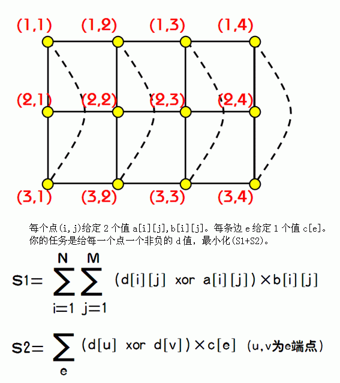
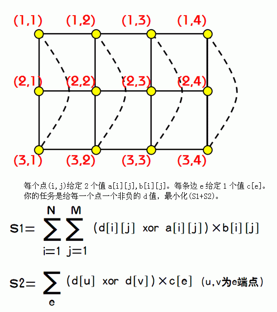

一个n*m的棋盘，左上角为(1,1),右下角为(n,m)。相邻的2点之间有连边（如下图中实线）特殊地，(1,i)与(n,i)也连有一条边（如下图中虚线）,i=1..m。
如下图，就是一个n=3,m=4 的棋盘。

| F.A.Qs | Home | Discuss | ProblemSet | Status | Ranklist | Contest | 入门OJ | ModifyUser Xeonacid | Logout | 捐赠本站 |
|---|

对于100%的数据 2<=n<=5 1<=m<=10000
a,b,c的值均为不大于10^6的正整数。